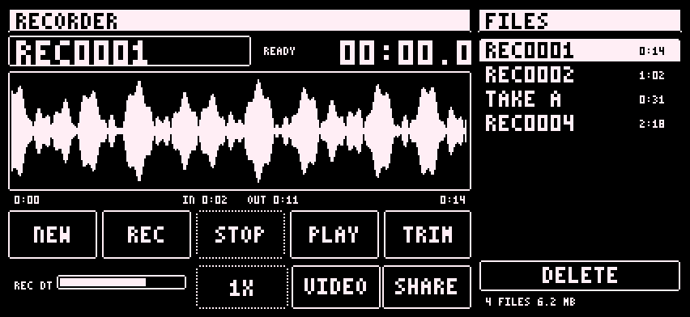

The recorder is the fourth main page. Swipe to it from the mixer.

Takes are stereo WAV files at the engine's sample rate. Names count up from REC0001.
Rename: tap the name and type on the keyboard. DONE keeps it. A name already in use is refused: NAME IN USE.
Trim:
SHARE sends the file as it is. DELETE asks SURE? the same way and names the take.
The FILES list shows every take. Tap one to load it. Drag over the list to scroll it.
REC DT: the Digitakt's level in the recording. Routing B only. In routing A the Digitakt is already in the output. The recording is the app's output plus the Digitakt at the RECORD DT level.
A recording keeps running while you change pages. If the route changes during a take, the take is closed.
Files are saved in the app's Documents/Recordings folder.
With VIDEO on, REC records one MOV: 1920x1080 at 30 fps, H.264, with the app's audio. It does not record the camera microphone. The file holds the camera picture, not the app's screen.
The 1X button cycles through the back lenses. It does nothing while VIDEO is off or while recording.
Video takes have no waveform and no TRIM. SHARE and DELETE work.
[TODO: how to play back a video take in the app]
An interrupted video take may be unusable. Stop the take before leaving the app.